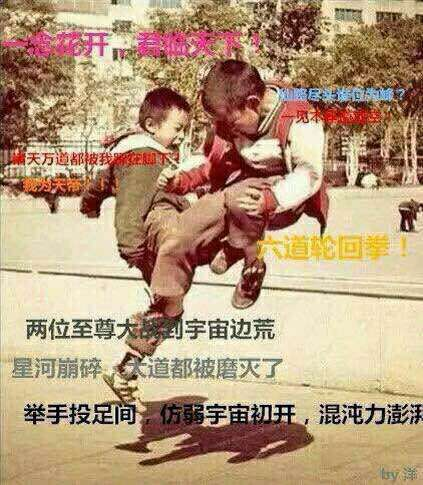

宇宙破坏拳
介绍：
前置超高、形容和画面效果极为酷炫、数值+1，跑团界鼎鼎大名的绝学
―宇宙破坏拳。
前置：高贵的宇宙破坏拳，需要拥有一个A级以上强化才有资格进行购买。
价格：500点
效果：
在使用一个招式的时候，你可以自行订制画面特效，且获得额外1DP表现（读作高贵）加值。
需要获得此好处，你必须主动喊出招式的名字。
变体―更加高贵的宇宙破坏拳：
需要使用宇宙破坏拳是个标准动作，理所当然不会和任何低贱招式兼容。
每影片可以使用一次，用完陷入力竭状态。
作为好处，你可以获得1点高贵加值，这不会和任何加值叠加。
你可以自行定制画面效果。
